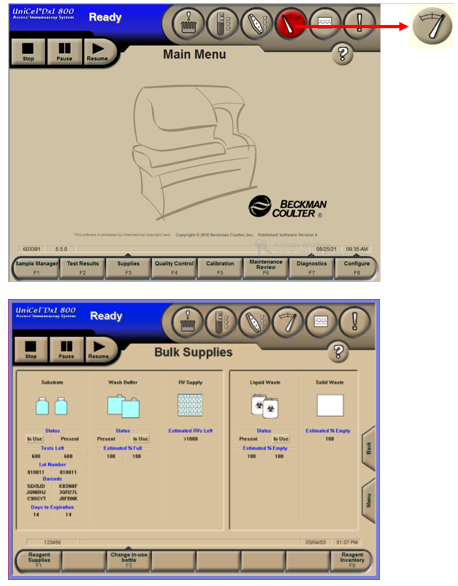
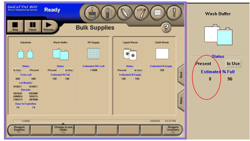
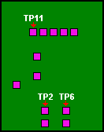
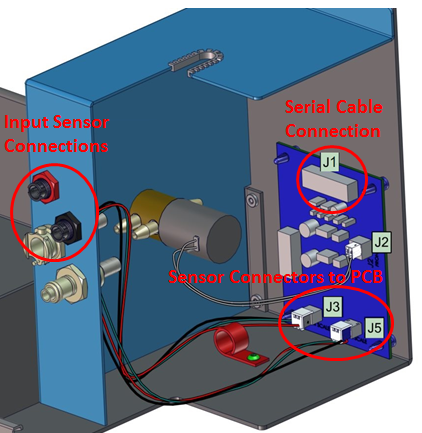

DxI Fluidics: Troubleshooting Wash Buffer Supply Pressure Sensors
This document provides instructions for troubleshooting the Wash Buffer Supply Pressure Sensors.
- Supplies screen does not match the fluid level of the container.
- Calibrating the Wash Buffer Supply Sensors fails.
- Sensor fails to detect fluid level of the container.
| Condition | If the sensor is | And the Wash Buffer Supply Container | Then the approximate maximum DC Voltage | And the approximate Fluid Display Level % |
| 1 | disconnected | absent | ~5V | Not Present -- % |
| 2 | connected | absent | 2.5 +/- 0.1V | 0% |
| 3 | connected | present but empty | 2.5 +/- 0.1V | 0% |
| 4 | connected | present and full | ~4.1V | 100% |
- On the user interface Main Menu screen, select
Bulk Supplies icon to see the statuses of the front and rear wash buffer cubitainers.

- Inspect the wash buffer cubitainers and identify which wash buffer level sensor potentially needs to be reset.
 Note: Wash buffer cubitainer potentially needs to be reset will display inconsistent or inaccurate reading comparing to the actual wash buffer cubitainer. Example: Status percent displays more than 5 percent left, but the wash buffer cubitainer is totally empty or clearly has more than 5 percent wash buffer remaining.
Note: Wash buffer cubitainer potentially needs to be reset will display inconsistent or inaccurate reading comparing to the actual wash buffer cubitainer. Example: Status percent displays more than 5 percent left, but the wash buffer cubitainer is totally empty or clearly has more than 5 percent wash buffer remaining.- Select Change in-use bottle icon in the Bulk Supplies screen to switch the properly working wash buffer cubitainer (In use) to prevent system interruption.
- Take the wash buffer sensor (Present) out of wash buffer cubitainer, hold it vertically in the air, and observe the cubitainer status. The reading should be zero percent (refer photo below with red circle). If the reading is not zero percent, then record the percent reading value.

- Turn the wash buffer sensor upside-down in the air and observe the status percent reading.
- If the reading is zero percent, this indicates the sensor is in working condition. Refer to DxI Fluidics: Calibrating Wash Buffer Pressure Sensors procedure.
- If the reading is the recorded percent reading value, this indicates the sensor is in working condition, but this sensor may need to be recalibrated for more accurate reading. Refer to DxI Fluidics: Calibrating Wash Buffer Pressure Sensors procedure.
- If the reading isn't zero percent or the recorded percent reading value, this indicates wash buffer is inside the sensing tubing and the sensor needs to be reset.
- Reset the wash buffer sensor by shaking the wash buffer level sensor. This shaking motion will remove wash buffer out of the sensing tube (this is similar to shaking an old thermometer to reset it). A successful reset is confirmed by sensor readings show same value (zero percent or recorded reading percent value) no matter the sensor is in the vertical or upside-down positions. Recalibrate the wash buffer level pressure sensors if needed. Refer to DxI Fluidics: Calibrating Wash Buffer Pressure Sensors procedure.
- Remove the Cap/Tube Assembly from the Wash Buffer Supply Drawer. Refer to Replacing Wash Buffer Cap/Tube Assembly with Pressure Sensor procedure for more details.
- Use a meter to check the resistance of the sensor.
- Turn the meter to the horse shoe sign for reading resistance.
- Attach the Black Lead to the Green (Ground) pin or hole.
- Attach the Red Lead to:

- Black (Signal) pin or hole.
- Red (Power) pin or hole.
- Confirm the resistance readings on Table 2 for repair actions.
| Sensor Circuit | Resistance | Repair |
| Normal |
Red (Power) pin or hole ~ 200k ohms Black (Signal) pin or hole ~ 100 ohms |
Reconnect the Cap/Tube Assembly and go to the next section for troubleshooting sensor voltage. Refer to Replacing Wash Buffer Cap/Tube Assembly with Pressure Sensor procedure for reconnecting the assembly. |
| Short |
Red (Power) pin or hole ~ 0 ohm Black (Signal) pin or hole ~ 0 ohm |
Replace the Cap/Tube Assembly. Refer to Replacing Wash Buffer Cap/Tube Assembly with Pressure Sensor procedure for more details. Note: If sensor still fails, go to the next section for more troubleshooting.
|
| Open |
Red (Power) pin or hole ~ Mega ohms Black (Signal) pin or hole ~ Mega ohms |
Replace the Cap/Tube Assembly. Refer to Replacing Wash Buffer Cap/Tube Assembly with Pressure Sensor procedure for more details. Note: If sensor still fails, go to the next section for more troubleshooting.
|
- Pull out the Wash Buffer Supply Drawer and locate the Bulk Fluid Tray Interface PCB mounted to the upper rear of the drawer.
- Gently loose the Bulk Fluid Tray Interface PCB cover by removing four screw to gain access to the Bulk Fluid Tray Interface PCB.

- Ensure the Cap/Tube Assembly is screwed into a full or empty buffer container.
- Use a meter to check the voltage of the Pressure Sensor.
- Turn the meter to read DC Voltage.
- Attach a meter to the Bulk Fluid Tray Interface PCB test points:

- Black Lead to TP11 (Ground) or the Ground Strap on the left rear end of the drawer.
- Red Lead to TP2 for Front Sensor or to TP6 for Rear Sensor.
- Go to Table 3 for issue confirmation and repair actions.
Note: Refer to Table 1 for sensor normal operations and Figure 1. for troubleshooting.

| Issue | Possible Cause | Repair | ||||||||
|
Verify the pressure sensor's downward and upward voltages by rotating the sensor tube assembly to confirm there is wash buffer in the sensor tube. Refer to Step 13m of the Instrument: Performing Optimized PM procedure for details. |
|
||||||||
|
|
|
||||||||
|
|
|
||||||||
|
|
Refer to Replacing Wash Buffer Cap/Tube Assembly with Pressure Sensor procedure for replacing the Cap/Tube Assembly. |